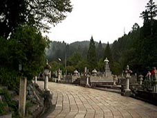
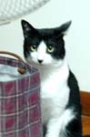
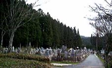

| かん | けん |
|
|
| かん | けん |
|
|

高野山

ぼくはミヤモトムサシです。命名者はでんでん虫さんです
さて、人間の方の武蔵は、見るという事について、観（かん）見（けん）二つの見様があるということを言っています。細川忠利の為に書いた覚書の中に「目付の事」というのがあって、立ち会いの際、相手方に目を付ける場合、観の目強く、見の目弱く見るべしと言っているのだそうです。
「見の目」とは、常の目、普通の目の働かせ方で、もう一つ、相手の存在を全体的に直覚する目がある、目の玉を動かさず、うらやかに見る目がある、そういう目は敵合近づくともいかほどにも遠く見る目だ、というのだそうです。意は目に付き心は付かざるもの也、常の目は見ようとするが、見ようとしない心にも目はあるのである、いわば心眼です。見ようとする意が目を曇らせる、だから「見の目を弱く、観の目を強くせよ」というのです。
「観の目、見の目」などという名の部屋に、一体何を書こうというのでしょう。
それがわからないのです。ともかくそういう名を付けておくと、それが形成体アクチビンになって、そこから生命体が発生するスーパーシステムというわけです。
NO.40『ストレスがストレスを癒す』 平成17年9月21日
なにかと言えばストレスが多い時代になりました。ストレスが脳溢血の原因になるのは、でんでん虫の経験上確かなことです。小学校の事務職員が一人足らなくなって、どうしても代わりの人を雇うことができず、どうしょうとせっぱ詰まったら左の脳の血管が切れたのです。これは恐ろしいことといわなければなりません。でんでん虫はただひたすらストレスを恐れて暮らしてきました。今度切れたら命がないと思ったからです。
ところが今日、「ストレスがストレスを癒す」と発見しました。ストレスこそはストレスを消すための最高の神の恵みであるというのです。この度、児童に大きな事故をおわしてしまうという、申し訳ない事件が起こり、でんでん虫は、長年続けてきた独り言を自粛し、この自粛は永遠に続くと思うのですが、小学校長は、児童が死ぬような事件に出会って始めて一人前の校長になれるという言い伝えがあります。私はそれだけは勘弁して頂きたいと思っていたのですが、今度の事故は、まさしくそれに匹敵するもので、心中、ただならぬストレスに驚かされています。
左の脳がストレスを感じると、右脳がそれを否定する、否定したかと思うと、左の脳が、いやいや忘れてはいけない、永遠に苦しみ続けろとささやくのです。一方、起こった事件の危機管理に没頭し、種々対策を講じていますと、同じような怪我をする子が次々と出てきます。その一つの怪我に対して、小学校の先生方は哀れみ悲しみ、どうしようかと戸惑い、中には涙を流して言い合いをする先生もいます。善意と善意がぶつかって火花を散らす、そうするとその情景に耐えられず泣き出す女の先生もいます。これは何だろうとじっと気を静めていますと、なんのことはない、それこそは私の心の姿なのです。
カオスのエッジを歩く毎日ですが、カオスははっきりさせたら死んでしまいます。どうしても生かし続けなければなりません。神は人に対して、常に恵もうとする方向性を持っています。だからすべてのことは感謝すべきことなのです。一切は相対とある、という処世訓の示す通り、すべてに感謝するということは、とりもなおさずストレスがストレスを癒すことに他なりません。ストレスよ来い、お前を食べてやる、というわけにもいきませんが、創意工夫の素材として、より信仰的に創意工夫するほかありません。
NO.39『自分のためのPL解説』 平成16年12月4日
でんでん虫は花粉症である．その心構えについて，PL概説を試みます．
他を過度に排除すると，それに相応した反撃を受けます．この宇宙は，相対という神の原理が働いているからです．従って，他を排除するのではなく，自分が工夫する姿勢をとれば，相対の原理により工夫し甲斐のある状況が目の前に現れて，思いも寄らない創世の機会を授かるものです．
時間を盗む人も，心を聞いてあげる気持ちになり，且つ，「ここまで」と感じた時，きっちり終わる工夫で自分の気持ちが伝わり，相手も理解できる．いくら丁寧に言葉を使っても，人を排除したい感情は，相対の原理からみれば，人として傲慢以外の何者でもない，必ず志に立ちふさがる障害が現れる．鼻炎の苦痛もその一つ，自分を低くもって，相手の人の気持ちが見えるところまでの努力を惜しまなければ，不満に振り回されることもなく，対象を生かし自分の足で立つことができます．仕事への鼻炎に伴う障害は消えるでしょう．また，自らは工夫せず，周囲に不満を見つけて，それを抹殺するだけでは，人間も人間社会も自立できないことを確認下さい．例えば，川に毒を流して魚を全滅させてから，目的の魚を養殖するような考え．類似の発想は宗教や人権問題を始め，世界中に様々存在します．生死に関わらずとも現象としては中世ペストなみの大流行である，汎アレルギー現象とでもいおうか，いずれにせよ働き場を失った免疫細胞が，花粉やほこりや冷気などに反応して活動，本人の体の組織をあやまって攻撃する現象です．
テレビにでる若い女性の多くが軽い鼻声になっている．そうすると自分の意志の及ぶ範囲が増えるのみならず，その人は協力者になってもらえるかもしれないし，反面教師として役立ってもらえるかもしれない．この感情はアレルギー性でなくても鼻に現れる場合が多い．気に入らぬものは排除する感情と，その存在を地球上から抹殺する発想の社会現象との符合自体に驚くほかありません．一説に，衛生思想の普及とアトピーなどのアレルギー性疾患の蔓延とは，正の相関にあると言います．滅菌○○抗菌○○の蔓延に比例して，鼻炎などアレルギー疾患も普及します．
六十年代，アメリカはヘイ．フィーバーが当たり前のように流行していました．今，思えば「気に入らぬものは抹殺する」という，根深い感性の反映と思われます．「気に入らぬものは抹殺する」感覚に知らぬ間に感染した戦後世代が成人した頃，花粉症や，相手を否定する少年，家庭問題が台頭した．花粉症は，自分の鼻でも気に入らぬものはもぎ取ってしまいたい，否定排除的発想と符合するものです．
人の子を救うべき衛生思想が，細菌やウイルスからしっぺ返しを受けたのがこの状況です．つまり雑菌に抵抗して，ほどよく働いていた免疫機構が失業し，余分なところに手出しをしているのがこの社会現象です．若い女性の多くが，鼻炎ならずとも鼻声であることに気づきます．無論個人差はあります．志の高い人はいい加減な人を排除したくなる，真剣白刃の仕事中，つまらぬことで話しかける時間泥棒とは縁を切りたくなる，鼻炎の症状に悩み，自分の鼻ももぎとりたい思いをされる感情のほどは，相手を抹殺してしまいたいほどに暴走しているのではないでしょうか．
一方，他を咎めるよりは，自らの努力に徹する寛容な心には，この社会状況も禍はしないものです．食物アレルギーが小学校の児童教育の一大問題となろうとしている時，でんでん虫の花粉症は，その前におまえがこの世の相対の原理を把握せよと教えてくださっているかのようです．而して，神に依る芸術教育以外に世の中を救う道はありません．
NO.38 『体罰をどう捉えるか』 六月十三日
体罰は学校教育法の禁ずるところです。しかし、実際には程度の差こそあれ、大なり小なり体罰が行われているのが事実です。いわばやみ体罰ということになります。しかし、一方、何を思って体罰というかはこれまた難しい問題といわねばなりません。身体に触れなくても精神的に過酷な罰を課することはいくらでもできます。とすれば、そもそも罰とは何か、そして、特に教育という環境における罰とは何かを問わなければなりません。ということは、教育とは何かを同時に問わなければならないことになります。
「教育とは何か」
人生が芸術であるならば、教育もまた芸術でなければなりません。とすれば、教育は「人が人を造る」芸術ということになります。
人が人を造ることのうちには、無論、健全な身体を造ることも、その他の、知育徳育など、知識や精神を造形していくことも含まれます。けれども、何にもまして「人が人たる所以のところの造形」がもっとも大切であることは言うまでもありません。人が人たる所以とするところは「芸術する」ということですから、教育の最大の眼目は「芸術する人」を造ることと結論づけてよい筈です。
芸術は、読んで字のごとく、何らかの意味での技術を伴うものであることは間違いありません。表現を具体化して形式に表す技術なしには、いかなる意味においても芸術とは言い難い筈ですけれども、逆に技術があれば芸術表現ができるかといえば、さにあらず、何を表現するのかという主体的条件(これをモチーフ、あるいは感動という)が先行しなければなりません。
感動は、それ自体を明らかにし、それがいかなる素材から成立しているかを明らかにし、そして、それをいかにして表現するかを、自ら明らかにして、初めて表現(芸術)を始める態勢になります。
そして芸術は、このようにして「明確に定められた初一念」について、「いったん初一念を授かった以上はあくまでもこれを貫き通す」努力によって成立する。努力は創意工夫の過程です。従って芸術する人を造ることは、自らの感動を明確にする力と、初一念を授かった以上は、これを貫き通す人間を造ることです。このことを「芸術する人間をつくる精神造形」ということにします。
また、別の言い方をすれば、意志を育てる芸術ということになります。「教育と規律」
以上の「精神造形」が教育の基本ではありますが、教育はさらに、人類文化の継承、発展のための人間造形という一面を持っています。広い意味での技術を学び、身に付けさせていかなければならないし、文化現象としての常識や規律も又、教育されなければならない課題です。体罰、あるいは罰則一般は、まさにこのようなかかわりの中に位置づけられる問題です。
これをいいかえれば、規律を習得し維持するということと、先に述べた「精神造形」との関わりが、この問題の本質であるということになります。
教育者は、知識なり技術なりを学生に与えようとする、その過程でなにゆえ罰が必要になるのでしょう。「教師の言うことを聞かないから」では、あまりにも根拠薄弱ではありませんか。それは往々にして、教師の側の都合の押し付けに過ぎないことになります。
もしこれが、本当に教師の都合の押し付けに過ぎないものである場合には、ことは重大な矛盾に逢着することになります。
何故ならば、教育の根本課題が、すでに述べた「精神造形」であり、「意志を育てる芸術」であるならば、大人の都合で子供の意志を無視したり、ねじまげたりするのは、意志を育てる目的に真っ向から反するからです。
特に、みおしえ年齢以下の子供である場合は、全く議論の余地がありません。「教育としてあるべき規律」
規律なくしては社会は成り立ちません。産業革命の遺物とは言いながら、現行教育のおおかたの現場、教場においても又しかりです。そうであるならば、どのような規律が最善の規律であるか、自ら律する規律がそれです。他から律するものを規律というならば、これは規律ではないかもしれませんが、ともかく自ら律することができることこそ、「芸術する」人間の最大用件であります。なんとなれば、省みて他をいうのではなく、自らの「意志」を明らかにし、自ら「創意工夫する」ところに、芸術の真骨頂はあるからです。
この「創意工夫」する意志は、幼少の頃から養われなければならないことは無論です。何事につけても、本人の意思を明らかにし、いったん意志したことは、これを貫かせるように導くのが、育児教育の基本でなければなりません。この時期に、自ら定め、自ら行う心情を培っておけば、どれだけ本人の幸福につながるか、計り知れないものがあります。
これを実現するためには、親が人間の表現の基本である「言う」「する」「見る」「聞く」「思う」の働きを正しく行使しなければなりません。この際、特に「正しく聞く」ことが寛容です。
本人の心を充分聞き、理解することが「しつけ」の基本となります。すなわち、本人の心を充分に聞き、理解すれば、子供はそのこと自体に満足し、大人の言うことを白紙で受け入れる態勢が出来ていることになるからです。無論このとき、「言う」ことが正しく行われればの話しです。「言う」ことはさせることになっていたのでは、子供はその強情さの鏡を写して納得しないが、正しく言うべきことが言われておれば、子供は極めて明りょうに納得し、自らの「意志」として、そのことを行うようになります。
自らの意志となったことは、まずは狂うことはありません。これに反して、親の強情の押し付けになっている場合は、いとも簡単に崩れてしまったり、親の見ていないところでは、そのようにしなかったりということになります。
ＮＯ32. 『初一感の座』 八月十九日
「短歌は神と人との交流のいみじき調べを言葉の音と意味とを合致せしめて朗々と歌いいずるべきものと心得ます」という短歌の心得がありますが、神と人の交流するところを初一感で交流するとして、でんでん虫は、そこを初一感の座と規定しておきたいと考えます。
三十数年、児童教育に従事してきて、子供の初一感の座を犯し、踏みにじることの愚かさ、これに過ぎるものはないと思えるからです。人が神と交流して得た初一感には、必ず感動の限界が明確に示されているのみならず、それを行うエネルギーも意欲も、他との釣り合い、バランス、時期を得た時理至るところまで、全てが含まれています。未来にわたっての意欲、逆境をはねかえす力さえも備わっていると言いたいほどです。初一感の座を犯してでも、子供がするべきことを親が指示し強要すると、事は簡単に進み成果は上がるかにみえますが、必ずや挫折し結実しないものです。
逆に親が子供の初一感の座を犯し続け、踏みにじり続けるとどうなるかということになると、枚挙にいとまがないほどです。見るも無惨なことになります。
成人したら、刈り込まれた初一感の座は一毛も残さぬ荒れ野原と化して、感動の限界などは全くない人になっています。さればどこまでも暴走するのは当然の帰結なのです。
これは、牽強付会の説というべきですが、例えば、清原がＦＡ宣言の後、阪神に入るべきか、巨人に入るべきか決定するにはまだ三日の余裕があった時に、息子の心がすでに決まっているのなら、三日間もいたずらに時を過ごすのではなく、一日も早く巨人に返事をしなさい、と息子の為を思い、父親が極めて正しいけれども介入となる助言をしました。あの時もっとぎりぎりまで迷っていれば、心は変化して阪神に入団したかもしれないのです。親が介入して、初一感の座を汚したので、清原の前途はご覧の通りの苦難の道になったのです。ほおっておけば、清原は迷いに迷って三日目の夜中に決めたことでしょう。それがどんなに巨人側にとっては、いらいらすることであっても、必要なことであったのです。あのタイミングで、ぐずくずするな、早く決めろ、というのが、諸悪の根元だなあと思います。夏休みの宿題、早くやればいいのは分かっていても、それは子供と神様の問題ですから、じっと介入せずに待つべきなのでしょう。待たずに「宿題出来たのか」などと言ってみれば、たちまちに初一感の座を犯したみしらせは、跳ね返ってきます。
その結果、胸にわき起こる感情こそは、宿情です。家の流れとして代々を過去から続く感情から抜け出るには、宿情を掌にのせてはっきりと見つめ、神の世界にお返しする他ありません。短歌として歌う心で対処するならそれは可能なのです。自分の意志のレベルを越えたものの差配を受け続ける現象を解明せずにおいて、二十一世紀の教育を云々してみてもつまりません。こんなことを書くと、家内は理屈はつまらないと言います。しかしでんでん虫にとってはこれは理屈ではありません。ことごとに家内に初一感を犯されて癇癪が蠢く実感実情なのです。おやおやそんなことを言ってはいけないのでした。発病し倒れてからの命の恩人に、そんなことを言っては罰当たりです。家内の初一感を私の初一感としてでんでん虫は生きています。夫婦は一体とは初一感を共有するということでしょう。家内には感謝あるのみで癇癪などはおきません。
（平成12年8月19日）
NO31. 『ヒトゲノム概要解読』 六月二十八日
子供たちの姿が一人もいない校庭に、朝から雨が降り続いています。校庭にたまる雨水の光景は、誰しもの心に自分の子供の頃、母校の庭を眺めた思い出として残っているものでしょう。自分の傘も長靴もなく、雨が降ったら濡れて帰るほかなかったでんでん虫は、少し恨めしい感情で雨の校庭を眺めたにちがいありません。
多目的室の戸を開けて、校庭がよく見えるところに椅子を据えて腰を下ろして、じっと雨の校庭を見つめ続けていますと、ヒトゲノムの解読が驚くべきスピードで進んで読了されたという、クリントンさんの声明のことなどが思いをよぎります。
校庭を取りまく土手の植栽には数千万の予算を必要としたのですが、今は子供たちを取りまき育てる緑の環境となっています。もしかしたら、子供たちはこの学校に来て育つだけで、親とは似ても似つかぬものすごい人間に育つのかもしれない、とふと思います。
親は、父に似ても、母に似ても、どうせ自分とそう違わない子になるはずだと思うのでしょうが、実は、親とは、目鼻口の形こそは似ていても、その個性は全く親とは異なる世界唯一のものですから、人類の誰もが予想できないものすごいものになるはずなのです。
現に、でんでん虫の長男も次男も長女も、両親の全く予想しなかった者になりつつあります。しかもその先どうなるか、ということに至っては全く予想はつかないのです。
「赤いバラに育てようとすると、うまくいっても赤いバラにしか育たない。しかし何者にもしようとしなければ、例外なくものすごいものになるのだ」という学説をこそ信ずるべきだと思いたくなります。
親は子供を幸福にしたいからこそ、絶対の自信をもって「ああしろ、こうしろ」と教えます。そして、教えた分だけは確実に子供を汚し、スポイルするのです。それにもかかわらず、淳ちゃんを殺した少年Ａのごとく、人間でないような者が出現した時、これは教え方が足りなかったと思うのです。そう思うように遺伝子に組み込まれているのでしょう。
その結果、更に教え込んで、子が母親を殺し、父親が子を殺すような社会現象が起こります。これなむ、人類が自ら滅びるに至る、アポトーシス現象ではないでしょうか。
植物の種子に、その植物に必要な情報が全て含まれているように、子供の遺伝子には、父でもない母でもない、いまだ人類の知らざるものすごい人間になる情報が充分に用意されているのです。育つのを待ちさえすれば、育つべき者は育つのは間違いないことなのに、何もしないで待つのは罪悪であるかのように言いなす人のなんと多いことか、遺伝子情報の読みとりが、更に次の段階にすすみ、父と母から、とんでもないすごいものが生まれる可能性が解明されるまで、その過渡期を、ＰＬ小学校の子供たちはなんとか乗り越えなければならないのだと思いめぐらせている間も、梅雨の雨はまだしとしとと降り続けています。
（平成12年 6/28）
NO.30 『パソコンゲーム』 一月九日
ＰＬ小学校にはパソコン教室があり、マッキントッシュのパソコンが23台設置されています。全学年、週一時間の正規の授業があって、慣れ親しむという程度の扱いはしているのですが、まだまだインターネットの活用とまではいきません。先生方の意識の改革は、時代の移り変わりのように早くは進歩しないのです。五年前の機種は、すでに遅すぎて、使い物にならなくなるのは目に見えてきましたので、今年は機種を変えて最新の新しいｉMac にしなければならないと考えています。
それにしても先生方の感情の方は決して新しくならないのはどうしたらよいのでしょう。パソコンゲームを幼少時代に経験しなかった人の感情は、子供がパソコンゲームをしていると、無意識の内に面白くなくなるもののようです。面白くない気持ちで注意するので、子供はますます熱中して親の感情を乱させる、そして滅びに至らしめるのが神様の狙いにちがいありません。
大学入試を控えた浪人生がパソコンゲームに熱中する姿は、親の心を痛め続けますが、小学生がゲームに興ずる姿にも又、先生方は心配するものなのです。学校でだけは、パソコンゲームを禁止しなければならないという論が、あたかも当然であるかのようにささやかれます。ゲームに熱中しない子が、どうしてインターネットに興味を示すでしょうか。ゲームを知りもしないで馬鹿にしてはなるまいと思います。
でんでん虫の乏しい経験でも、脳出血後の壊れた頭脳では、パソコンゲームの最も初歩の簡単なものでも、キーを打つことはできません。「あれは大変なものなんだよ」と、その時発見して驚いたものでした。大人は何でも分かっているつもりでいますが本当は、何も分かっていないのです。ゲームに熱中することは人間であるための唯一絶対の必要条件である。私はそのくらいに思っています。学校で子供たちがゲームにはまりこみ、先生方の感情をずたずたにする、それは、はたして困ったことでしょうか。それともそれこそは児童教育の一番の醍醐味と言うべきでしょうか。
授業中にガムをかんだり飴を食べたりすることが止められなくなって絶望している国もありますが、子供が何かに熱中するところには、子どもは、本来神の子で大人の差配の外に生きていることをどうしても教えたい宇宙意志の存在があると思えてなりません。
二学期の終わりに、校内巡回の途中、パソコン教室をのぞいてみましたところ、１人の男の子がゲームに熱中しているところでした。私の気配を感じるやいなや、さーっとゲームを終了して、フロッピィディスクを出して隠してしまいます。自分は悪いことをしていたと思っていたらしいのです。それは大変気の毒なことです。
誰もいない休み時間のパソコン教室に自分だけ入って、家から持ってきたゲームのソフトを機械に読み込ませて、さあ、ゲームを始めようという時の胸のときめきこそは、人間性の開発される瞬間ですし、少年倶楽部を開いて、のらくろに読みふけった時代の親には分かる筈なのに、これがわからないのです。どうしてでしょう。大人の脳はたぶん枯渇してしまっているからです、ゲームのスピードを面白いとは認められず、子供が熱中するのは不気味だから禁止したくなるのでしょう。その壁を大人が乗り越えない限り、パソコン教育など学校で何時間とっても、無駄なことです。
NO.29 『浪人時代』 十二月三日
ひょんなことからでんでん虫の浪人時代を思い出してしまいました。徹底的に勉強しなかった二年間でしたし、予備校に行った初めの年の一年間は、予備校ではまったく誰とも口をきかなかった時代でした。予備校というところは私にとってはそういうところだったのです。
たった一度だけ、原仙作という英語の先生が、自分の教える教科書を全部暗記してきているのに感動したことがありました。原仙作さんといえば、当時旺文社の参考書「傾向と対策」の執筆者で有名な人でした。世の中には勉強してくる人がいるものだなあと、他人事のように感心して現在に至っています。
東京の大塚にあった武蔵高等予備校の講師陣には、当時東大の教授が何人も名前を連ねていましたから、ある先生はエドガーポーの「黒猫」を使っていました。田舎の高校を卒業したでんでん虫にとってはまったくレベルの違う教材で、予習も復習も一度もしなかったので、授業中無言でいるほかなかったのは当たり前のことです。それなのに一日も休まず登校し、夜は製氷会社で氷を作るアルバイトをしていました。
まったく無駄な一年間を、その次の年も繰り返して二年浪人したので、合格発表の日、合格を確かめて帰宅しひっくり返っていましたら、兄が又落ちたと勘違いして「困ったな、来年はどうするんだ」と聞いたものでした。つまり、合格してもまったく嬉しくない状態だったのです。浪人というものは苦しいだけだからと身にしみたので、自分の子供たちだけには浪人はさせまいと思いましたのに、長男も次男もちゃんと浪人をしました。
あの無駄な時代に何の意味があったのか、もちろん大切な時間だったのです。よくはわからない理由により、大切な期間でありました。父母はあまりにも遠く離れていましたから、心配して「少しは勉強したらどうだ」と思う筈もありませんでしたから、親に縁をつけられた訳ではないのに、どうしてあんなに勉強する意欲を失っておれたのでしょう。まったくわからないことです。
両親が理想的な心境であったら、子供の私に勉学意欲が湧いていたか、そんなことはあるはずはありません。なぜか、あれはあれで大事な時代だったのですから、勉強などしてはいけなかったのです。人生の晩年になって、あの無駄な時間こそはわが人生の最高の時だったのだと発見することになるのでしょう。その時にこそ、現役合格して浪人時代を知らない友人に「俺には浪人時代があったぞ。最高のぜいたくをしたぞ」と言ってやらねばなりません。
ＤＮＡにだって、まったく何の働きもしていない部分があるのだそうです。よく調べてみると、ただのスイッチの働きであったりします。スイッチといっても、人を殺したくなる気持ちをオンにしたりオフにしたりするスイッチであれば、スイッチこそは一番大切なものです。浪人時代は人間になるためのスイッチだったのかもしれません。あの時代の充分な無駄こそが、でんでん虫の今の幸福の源泉です。
勉強しない浪人生を叱りたい世のお母さん方に、「それはあまりにもこっけいだ」と言ってあげなければなりません。
NO.28 『不登校』 十月二十日
日本経済新聞、99.8.13(金)の朝刊によると、「不安定や無気力などの理由で98年度一年間に30日以上学校を欠席した『不登校』の小中学生は12万7694人で、過去最高になったことが、文部省の学校基本調査で分かった」と報道されています。
前年度に比べ21.1%増え、中学校では43人に一人、小学校では294人に一人が不登校になっているのだそうです。これは現行の統計方法を取り始めた91年度のほぼ二倍になっており、ともかく増え続けているところに不気味さを感じているのです。不登校の理由別内訳は、情緒的混乱が26.5% 無気力が21.5% です。
ところで、昨年度の卒業生でＰＬ中学に通っている筈の子が一人、三ヶ月不登校を続けていることを先日知りました。でんでん虫はわが子が不登校になったという感覚で受け止めています。灯台もと暗しで、わが小学校にも「しんどいから行きたくない」と言い、週の半分くらいは学校を休んでいるお子さまがいます。こちらの方は今のこの一瞬の問題で放置して置くことはできません。ご両親にとっては12万7000人には関係なく、わが子一人がさしあたっては問題なはずです。
不登校はみしらせですから、有り難いことですが、何がどのようにどう有り難いのかがわからないことには、前進はありません。でんでん虫は自分も大学生のとき、一ヶ月の不登校をしたことを思い出しています。
あれは大学二年生の四月のことでした。一年生の時にしこたま単位を落としましたので、二年生になって大学に行ってみたら「お前は進級してないから出席簿に名前がない」ということになっていたら嫌だなあと思ったら、学校に行けなくなってしまいました。私の大学は出席が厳しく、四回欠席したら単位はやらないという約束でしたから、四月いっぱい一日も行かずに寮でごろごろしていて(週一回授業があるとして、四月は四週ですから四回の欠席です)、そこが限界で、五月になってやっと行ってみました。勿論ちゃんと進級していて「お前は四回休んだから、あと一日でも休んだらおしまいだぞ」と言われただけですんだのです。どうして一ヶ月もいけなかったのでしょうか。あの弱々しさは何だったのでしょう。その原因が今はよくわかります。
でんでん虫は、その後成人してから、みおしえによって、「自分は親に甘やかされて育ったことを自覚せよ」という意味のことを繰り返し教えられてきました。おやじは恐い人間でしたから甘やかされていないと思いましたが、甘やかすという言葉の意味が分からなかっただけで、本当は縁をつけられ介入されて、甘やかされて育ったのです。初一感を神様から授かって、自分で思いを定める前に、親から心配され、要求され、神と人との交流する場を汚され、勇気のない人間になってしまっていたのでした。大学生にもなって、自分が大学に行って進級したかどうか確かめる勇気がなかったということは、何たることでしょう。現前する神業の機微が何も見えていないという証拠です。
「人は自分の力で生きているのではなく、神に依って生かされていることを認識し、その認識が感覚化されている状態をもって、神に依るということにしよう」とＰＬ小学校の先生方では申し合わせています。しかし、そうはいっても、神という概念は個人によってまちまちなのです。神は人の作る観念ではなく、刻一刻、現前に現れている神業の機微を捉えて、そこに現れている神慮の機微と交流することが、本当は何よりも大切なのです。
「芸術教育」といっても、我々は短歌の道をとおして芸術を云々しているのですが、神と人との有り通ういみじき調べを朗々と詠いいずる、まず第一に神と人との交流の有無が問題とされねばなりません。短歌では、感動とか真実の有無がまず問題となりますが、感動があるとして、その感動が7であれば7に、8であれば8に、過不足なく表現するのが短歌の道です。
「芸術教育」では、それと同じように、相手に合わせて7に感じたことは7に表現します。そうすると神は祖孫一心の真理に基づき、よき自己教育をしてくださいます。
そこで不登校の原因をあえてさぐるならば、幼少の頃から、親が子供に良かれと思って、介入し縁をつけて心配をしたりいたしますと、どうしても子供自身が神と有り通って感動を得る前に親が介入することになり、子供が神と通う場を汚してしまいます。かくて神のない存在感のない子が育つわけです。少なくともでんでん虫の場合は、自分の弱さをそこに発見し、亡くなった父母に成り代わり、神を知らざりし故に犯した感情の積み重ねを、今は理解し味わうべき時なのだと思います。
不登校は教育を間違えたから起こるのではありません。子供が言ってほしいと思った分だけ、過不足なく言ってあげるべきことを、求められていない状況であっても、降る雨のごとく親の心を注ぎ込んだ証しのようなものです。
日本経済新聞のみならず、朝日、毎日、読売、産経などと、ほとんどの新聞が不登校を問題にして社説その他で取り上げています。でんでん虫の手元には、全国二百紙ぐらいの新聞の教育関係の記事のみを切り抜いた資料が届きます。そのほとんどが不登校を問題として、「学校は何か解決策を考えよ」と主張しているかのようです。勿論問題は学校にありますが、学校も又生き物であり、神に依って生かされている存在です。神慮の機微に触れつつ、有りを有りとして過不足なく表現していく、芸術生活の思想が世にあまねく広がる他に方法はないと思われます。 (平成11年10月20日)
NO.27 .『シャツ切り事件』 十月八日
図工の時間に、一年生のＫ君がＤ君のシャツをはさみで切ってしまった事件は、担任の先生と図工専科の先生も巻き込んでゆるやかに進展しています。この事件のてんまつを、丁度学校見学会のあった日ですから、来年入学する保護者の方々にも話しました。そこででんでん虫の心の中にも「あれでよかったか、足りないところはなかったか」と、結構心に重くのしかかっています。図工の先生は、今日は病気で休まれましたし、担任の先生も、シャツ事件よりはむしろその他の時間の行動に対して、対応しきれないものを感じておられます。そのもそのはず、この事件はなかなか象徴的な事件で、根は深いものがあるのです。
Ｋ君がハサミで切りたくなったのは、なぜＤ君のシャツでなければならなかったか。あまた同級生がいる中でＤ君が選ばれたのは何故か、それが図工の時間であったのは何故かということになり、最後にでんでん虫がこの事件にもろにかかわってしまったのは何故か、ということにもなります。
Ｋ君とＤ君が職員室に連れてこられた時、二人のけんかについて、私はもっとも報告の聞きやすい位置にいました。神業は私をめぐって起こったのです。一年生の不祥事件をよき芸術の素材なりと頂くことから始まりましたから、まず初めに、感動の限界を見定めておかなければなりませんでした。「この事件は有り難いこととして頂く、困ったことではない」というのが初一感です。他人のシャツをハサミで切り裂くという理不尽なことをした子には、ものの大切さ、人の心の大切さを教えなければならないと、世人は思います。ＰＬ小学校の先生もほとんどの人が教育しなければならないと思う筈です。
そこで、それは人間が人間を教育することになり、神をはねのけて神を粗末にすることになりやすい間違いだと、私は言いたいのです。教育は、神に依りつつ自分が自分でするものです。他人のシャツを切ったりする行為をしてはいけないということくらい教えられそうですが、これを教えると、それだけは貴方から聞きたくないという感情が子供の心に起こります。「気に入らない」という感情がますます今の状態に熱中するという状態を引き起こすからです。
シャツではなくて、少年が人間の首を切って見せた時、人々は驚きました。「これは何だろう」と、教育が足りなかったのではないかと思ったのです。しかし、そうではなく、教育しすぎたので首を切ることになったのです。神を無視した教育の末路です。ここは神様が「よき芸術の素材なり」と頂くことを要求しているのですから、Ｋ君とＤ君の心のうちを見なければなりません。
Ｋ君の家では、今春、赤ちゃんが産まれてＫ君は弟の誕生と共にお兄ちゃんになったものの、それまで両親の心を独り占めにしていた状態から、突然全ての愛が生まれた弟に向けられて、自分から離れたことを関知します。彼は面白くないから何か気晴らしをしたかったのです。
一方Ｄ君は、この日体操服を忘れて学校に来てしまいました。体操服を忘れた子は他にも何人もいたのですが、Ｄ君のお母さんだけは、愛情深きがゆえに持ってきてくださったのです。事件は丁度その時起こりました。つまり、お母様に縁付け介入されたＤ君から存在感が消失し、Ｋ君の格好の餌食になる弱々しさを発散させてしまったのです。
よき芸術の素材なりと受け取った後は、そこに現れた神業と交流して、丁度に表現するという作業が残ります。10の感動は10に表現するのです。とすると、「他人のものを傷つけるな」という注意は、ここでは感動の外です。今、Ｋ君は、自分のむしゃくしゃを理解してほしい一念で行動したのですから。
人間は10のものを10に表現すればよいのです。人間の表現が過不足なき表現となり、芸術となるならば、神様がその人間を教育して下さいます。その子がやがて成人して「ふと気づく」という行為で教育されるのです。「怒り急ぎ憂え悲しむは物事を崩す」という真理は、教育者が、神に依らず自分で早く教育しようとする心を教えてくださってもいます。k君が成長して父親になった時、彼の子供がはさみで他人のものを切り裂く、それまでじっと待っていても決して遅くはありません「教育者は極めて気長に」と、教育者みおしえにもあるはずです。「悪しきことをするな」と、子供に悪しきことをさせないのは、神様をはねのけることに他なりません。 (99.10.8)
NO.2６ 『いじめ』 八月十三日
海外から帰って、「ずいぶん長い間、家内をいじめてきたけれど、もうそろそろ家内をいじめるのはやめにしよう」と今朝、ふと思いました。これは一体どうした事でしょう。抽象的な決意ではありません。例えば、海外旅行から帰ってきて、体重が四キロも増えたのを知って、家内が「朝食は抜きにしましょう」と発言したのに対して、「そうだなあ、やめてもいいなあ」と思ったあとで、ふと、こんな時、そんなことはできない、と不愉快になっていたものだが、家内に対して不愉快になるということは、そのまま家内の心に通じるわけで、耐え難いことであったことを思い、これは夫の妻に対するいじめではないかと思い至ったわけです。家内がつらがる感情を制御できない自分を放置してきたことを止め、空腹を楽しむことなど何でもないことです。あえて不愉快になることを止め、「ああ、いいよ。やせるまで食べないことにするよ」と思うことができるような気がしたのです。観の眼の成長と言わなければなりません。
ではどうして観の眼が成長したのかと言いますと、バケーションハウスでの１週間、でんでん虫は、何もせず、何も思わず、全くゆとりある時間を過ごしたからです。小学校の新指導要領が、ゆとりの時間をそのようにとらえているのであれば、人間の教育に一番大切なものは、まさしくゆとりの時間であったことを今回の旅行は教えてくれた事になります。
小学生のいじめ問題も、いじめる方もいじめられる方も自分の正体が見えていないものです。自分の行為がいじめてあることを発見できる力、それは、観の眼の生育にほかなりません。妻に介入されると不愉快になるという自分の姿を発見して、その発見が自覚されてみますと、自覚せしめたものは何かという新たな問題に逢着します。
NO.25 『一分間スピーチ』 六月四日
三年生の教室を通りかかりましたところ、朝のホームルームが終わって、丁度一分間スピーチに入るところでした。足を止めて見学することにします。今日は小百合さんの番でした。教卓の前に立つと首から上だけしかでません。礼もままならぬ姿で、何を言おうかと迷っています。男の子たちが「題を言え」「題を言え」と応援しました。隙があると女の子をいじめて楽しむ男の子たちですが、女の子が立ち往生しているとすぐ助け船を出してあげるなど、意外な優しい一面を見せられてでんでん虫はほっとします。
実は、男の子が女の子をいじめる雰囲気を見に来たのでした。小百合さんは、男の子の声にはげまされて「家族という題で話します」とまず第一声を発しました。ともかくも声を出すことが大切です。何かを言えばそこからお話はつなげることができるのです。小百合さんの心のときめきも、声を発してすぐ落ち着きました。「私の家族は四人です」と言ってみると、我ながら、これはちゃんとまとまっていると思ったのではないでしょうか。「でもおばあちゃんが来ているので、今は五人です」と続きました。起承転結の転の部分にあてはまります。そのおばあちゃんが足を痛めて「痛い、痛い」とおっしゃっているところが結びとなる大切な部分でした。ちゃんとお話ができて小百合さんもうれしかったけれど、はげましてあげた男の子たちもうれしそうな表情で輝いています。「なかなかいいじゃないか」とでんでん虫も思います。
三年生でいいことをしているから、一分間スピーチを一年生から初めて六年生まで続ければ、すばらしいことになると思うのは間違いです。よいことだからと言って、全体を統一したくなる気持ちが神をはねのけ、神様を無視することになるのです(と私は思います)。
一分間スピーチをしたいとはじめに思った三年生の担任の先生の初一感は、神様から授かった初一感です。そこには感動の限界がはっきりと示されていますし、行動するエネルギーも同時に授けられているはずなのです。ですから十の感動は十に、八の感動は八に表現することができます。つまり神に依る芸術としての表現が成り立つのです。ところが、「読み聞かせ」がいいから、家の子のクラスにも読み聞かせをしてもらいたい、という気持ちが担任の先生に押しつけられてしまいますと、読み聞かせはたとえどんなによいことであっても、担任の先生には感動の限界もなく、真実もない世界ですから、当然それを行うエネルギーも創意工夫も働かず、そこには思いがけない不調和が現出します。その間の呼吸は『秘すべし、秘すべし』とでも言うべきものなのです。
NO.24 『モンテッソーリ学校』 四月十二日
オーストラリアのモンテッソーリの学校を見学した日、でんでん虫は一人の先生の授業を初めから終わりまで見ることが出来ました。他の先生方が学校全域を見学している間、車椅子では行けないから、でんでん虫は一人教室で見学することになったのです。この教室では二十数名の子供たちが一人一人自分の学習目標を持っていて、各々に自分の学習をしているのですから、先生が全員にものを言うことは一度もありませんでした。しかし先生は一度だけ教室の中央に座っていた女の子の隣に腰掛けて、その女の子とだけ一対一の真剣な話し合いをされました。そのシーンは、他の子供たちが見て見ぬふりをしたまま十五分も続いたでしょうか。全体に話しかけることはなかった教室は、先生と子どもとの静かな対話のうちにみちがえるほど充実した学習の場と変わり、物音一つない静かな学習が続きます。でんでん虫は、そこに、あきらかに神によって差配され、コントロールされた教育の場が現出しているのを感じました。あとで担任の先生と話した折りに、一人の子を大切にすることがそのまま二十名を大切にするのと同じ効果を生んでいるのは、神に依ったきょういくだからです。と感想を申し上げました、この表現は少し難しかったようです。
マリア・モンテッソーリ女史は、常に「新しい子ども」を通して「新しい人類の創造」を目指して、世界各国でモンテッソーリ教育の教員養成に努力してこられた人です。1975年には日本における最初の国際モンテッソーリ教会直属のコースが開設され、今年はディプロマを授与されたモンテッソーリアンは1000名を突破しました。人類の平和につくすという目的では、ＰＬ人と同じ理想に生きている筈の人々ですから、今回の研修旅行の中に二校のモンテッソーリの小学校が入っていたことは、決して偶然ではないはずです。子どもと神があい通っている初一感の座に正対して教師が対応していると、クラス全員の子供たちが等しく自分も又その意志を尊んでもらっていると同じ教育効果が現出するのです。そこはどちらかといえば、でんでん虫の方が専門のようでしたから、偉そうな事ながら「貴方が見せて下さった授業は、神に通っている点ですばらしい授業であると言えると思う」という表現を一応はしてきました。
一度通訳の人がミスして、真意を取り違えましたので、「そうではない、こういう意味だ」とくわしく説明したのですが、でんでん虫の話は通訳さんに通じにくいということもありました。まあ、それでいいのです。知る人ぞ知る、でんでん虫はいつか又、話の通じる人にこの日の感動を語るまで胸の奥にしまっておこうと思います。
NO.23 「総合的学習について」 - 本校の方針と指針 -
一月二十九日本校は、三十五年前、創立の年にすでに完全週五日制を導入し、一年生から英語の授業を取り入れ、国際感覚の教育においては時代の先を進んできた学校です。週五日制は二十五年は早い、と言われたとおり、社会の認めるところとはならず、途中で中止されました。平成十四年から完全週五日制が実施される時代となり、ようやく本校創立の時の「神に依る芸術教育」を為しえる社会的基盤が整ったと言えます。この時にあたり、総合的学習の時間こそは、子どもの意志を尊重する学習という観点からみても、待ちに待った「神に依る芸術教育」実践の授業であると言えます。
総合的学習こそは、本校全教諭が、満を持して取り組むべき学習体制であると捉え、先ずその全体像をとらえるべく、参考資料を配ります。
『総合的学習の運営とこれから』 児玉邦宏著「総合的学習」から抜粋
一、子どもから
総合的学習は、子どもから出発する。子ども自身が、社会の変化に主体的に対応することを求め、その主体性を育てることから、子ども自身の問題意識、興味、関心からすべては出発する。現代社会の課題（あるいはクロス・カリキュラー・テーマ）も、この子ども自身の問題意識や興味・関心とのかかわりにおいてとらえられていく。
そこでまず求められるのは、子どもがどんな社会を送り、何を考え、何に関心をもっているかといった「子どもの実態」にどこまで教師の側が迫りうるかである。もしくは、子どもの内面をとらえ、解決していくという「子ども理解」をどこまで深めうるかである。さらにこのこととかかわって、教師自身が現代社会の課題をどうとらえ、どう生きていくべきととらえているかである。
したがって第二に、子どもとともに、総合的学習をどうつくり出していくかである。教師の課題を子どもに一方的に投げかけたのでは、押しつけになり、引きまわしになる。主体的な対応能力は育たない。反対に、子どもの主体性を尊重するという視点から、子どもまかせにしていては放任となる。そのいずれでもなく、両者の中間に教師の役割が求められる。「支援」がそれであり、子どもとともに、活動内容をつくり、活動を展開していくところに、教師の基本姿勢がある。
そのためには第三に、教師自身に鋭い感覚あるいはセンスが求められる。子どもの姿、想いを鋭くかぎとり、何が必要であり、何を求めているかを見つけ出さねばならない。その次に、子どもの生活の中に、あるいは周辺の社会の中に、これぞと思われる素材を見いだし、教材化し、あるいは単元づくりをしなければならない。ある教師にとって見過ごしてしまう素材であっても、別の教師の手にかかるといきいきとした教材と化し、単元となる。教師のセンスが問われるゆえんである。
教材づくり、単元づくりにとどまらず、子どもを中心に据え、子ども主体の学習の場、学習時間、学習形態、指導体制などが工夫されねばならない。柔軟化、多様化、弾力化の求められるゆえんである。教師の柔軟な構え、センスが、子どもが思いきって自分の興味・関心にのめり込み、自分を発揮できる活動を生み出すことになる。かたくなな姿勢では、画一化、硬直化を招き、子どもの主体性は育たない。
二、教師の意識の変革
子どもから出発するということは、教師のこれまでの意識野姿勢を変えるということでもある。これまでの教師の教育への基本姿勢は、「子ども」に先だって「教科」に置かれていた。「子どもの先生」ではなくて、「教科の先生」であった。総合的学習は、こうした教科中心の基本姿勢から子ども中心の基本姿勢への転換を教師に求める。
それは、一つには子どもの興味・関心や問題意識が総合的学習の出発点となっていることにあり、教科中心の姿勢は、この子どもの意識や意欲と衝突し、子どもの主体性を抑圧することともなるからである。さらに「総合」は「教科」を越えたところにあり、教科専門主義は、総合を分断し、現代社会の課題を課題として丸ごととらえ、直視することを弱める結果となる。
このことは、教師の専門性は不要であり、捨てるべきだといっているのではない。教科の学習は大事にされるべきであり、教師の教科専門性がそれを支えることに変わりない。それと並んで、総合的学習が設けられていくことになり、この総合的学習には教科の専門性では対応できないこととなる。そこでどうするかである。このことについて、イギリスのクロス・カリキュラムにおける指導体制は、大きな参考となる。
① 単一教科アプローチ…他教科との整合を念頭に置きつつ、自分の専門教科で教える。
② 他分野アプローチ…特定のトピックスについて、関係する教科の教師が集まり、共同して計画し、それぞれの教科で教える。
③ 学際的アプローチ…通常の時間割から外れて、一週間といった一定期間の活動で、複数教科の教師が共同で教える。
④ クロス・カリキュラー・コース・アプローチ…別枠時間割のコースにおいて教える
これは中等教育レベルでの総合的学習の場合であり、特に特設された「総合的な学習の時間」においては、③や④が求められる指導体制となる。こうした総合的な課題に優れた教師がいれば④となるが、そうでない場合は、各教科の専門教師のティーム・ティーチングとしての③が求められることとなる。もしくは新たに、地域の人や社会人で専門的力を有する人の支援を求め、指導協力体制を編成することが求められる。小学校にも同じことがいえる。
つまり、自らの専門性に閉じこもっていては、総合的学習は難しい。専門性を大事にしつつも、他の専門教師と共同して指導していく体制が、どうしても必要となる。その意味で、専門性を越え、開かれていくことが意識として求められてきたわけである。
また、教師個人としては、このような総合的学習の必要性を求めるかどうかである。総合的学習は、新しくつくり出す活動であることから、教師自らその必要性を感じないかぎり、その創造も展開も難しい。いきいきとした活動が生まれてこない。このことは、教師自身が、現代社会をどうとらえ、どこに問題や課題を感じとっているかである。教師自身に問題意識がなく、生き方に関心がなければ、総合的学習を生み出すことも、子どもに生き方を求めることも困難となる。まずもって、教師自身が、総合的学習を必要とするかどうかである。
四、大いなるトライアル
今、求められているのは、大いなるトライアルである。何か形あるものがあって、そこから総合的学習は出発するのではない。ある意味で、目標も内容も何も判然としないままに開始するものである。それだけに、冒険や失敗をも予想した上での試みであるといってよい。もちろん、総合的学習の目標や内容が固まり、各教科との関連も明らかにされ、学校段階を貫く系統性、一貫性も明らかにされて後、新教科あるいは領域として設定されるのが本筋であろう。
しかし、目標や内容が、これまでの数多くの研究開発学校等での実践を集約しても、固定したものとして明治できる結果に至らなかったという状況がある。そこには、総合的学習自体が、子どもから出発するために、きわめて多様かつ柔軟な内容と方法をとるため、その集約が困難であるという学習自体の性格に由来する問題がある。もっといえば、一定の目標や内容を固定して示すことが、はたして総合的学習の趣旨や性格にふさわしいやり方であるのかどうかという問題もある。
結果的に、一定の目標や内容を示すに至らなかったわけであるが、それにもかかわらず、実施に踏み切ることとなり、そこに学校の悩みや不安あるいは批判の目がある。こうした状況の中であえて実施に踏み切ったのは、現実世界と子どもがかかわり、「主体的にこの世の荒波を乗り切り、生きぬく」ことが、きわめて重要な、かつ緊急の教育課題となってきたからである。ますます変化が激しくなる世の中にあって、この教育課題を十年余りも先送りできないからである。総合的学習の趣旨からして「待てない教育」だからである。
そうであるだけに、むしろ、十年間を大いなるトライアルの期間と受けとめ、思い切った目標と内容に向けて、実践に取り組んでいくことが、むしろ求められている。幸いなことに、すべては学校の創意工夫にゆだねられている。弾力的に思い切って学校が実践に乗り出す条件も用意されているわけである。失敗や挫折を恐れず、子どものために、大いなるトライアルに着手することが求められている。
NO.22 『スリッパ事件』 一月十二日
職員朝礼である先生が、「『学校の来客用のスリッパを、自分の上靴を忘れた子に履かせることは、教育上好ましくないことなので履かせないようにしよう』、と職員一同で申し合わせをしたにもかかわらず、最近平気でスリッパを履かせる先生が多くなり、目立ってきたので何とかしなければならない」という提案をなさいました。これは一種の弾劾裁判です。
そこで、でんでん虫が、「いったん申し合わせをしたことでも、冬になって寒い中で裸足で歩いている子どもを見たら『スリッパを借りて履きなさい』、というのは自然なことなので、又話し合いをしたらどうですか」と感想を述べたのですが、「いや、寒くなったらどうなるかは話し合った時点で分かり切っていたことであり、やはりいったん話し合って決めたことは、全職員がきびしく守り行わなければなりません。ＰＬ小学校はそこがいい加減で、話し合いで決めたことがさっぱり守れず、全部崩れていくかの感があります。」等など、
聞いているうちに、もう一言、言いたくなったでんでん虫は「決めたことを守らなければならないということも、そう思った人が、自分で自分に厳しくすればよいのであって、他人にそれを求めるべきではない」と申しました。それがカチンときて「そんなことではダメだ、決めたことは守られなければならない。そもそも学校というものは‥‥‥」と、その先生は学校を立派にするために怒りました。
意気盛んな先生の心意気はよしとして、きびしさは自分で自分に与えるものであって、他人に向けるものではないということは、なかなか分かりにくいことのようでした。「本来は校長が言うべきことを校長が言わないから、自分が代わって言う」という雰囲気なのです。これなん、面白い神業です。
児童にスリッパを履かせた記憶のある先生は何人かいるらしく、「履かせることより、履かせないことの方が問題は大きいと思ったのですがねえ」という発言や、「上靴を強制的に洗わせてしまったので、乾くまではスリッパを履かせたのです」等などと、全て無理のない事情ばかりです。
問題は、規則を絶対として、そこに服従するという世界を構築したいのかもしれませんし、本当は自分が規則でありたいのかもしれません。ナチスだって、合法的に作り上げた集団でしたから、話し合いによってでも、全員が服従しなければならない、という掟を作るのは避けたいものです。スリッパを履かせたくないという先生と、スリッパを履かせてしまった先生と、全く同一の心の姿であることが、垣間みられた面白い神業ではありました。
神様は、人間が作り出す観念ではありません。刻一刻、私の意図するところに応じて、鏡を映し出してくださるものなのです。かかるとき、神様は何を見せようとして下さっているのか、何をお教え下さっているのか、それが全くわからないところにこそ、児童教育の醍醐味があります。
NO.21 『或る手紙への返信』 平成10年12月31日
或る男の子のお母様から、今日、お手紙を頂きました。お子さまが二学期中にテスト用紙を白紙で提出したりした、一連の態度で担任の先生に反抗して、担任の先生、校長先生へ大変ご迷惑をかけました。相済みませんでした、というお詫びのお手紙です。お詫びをされるいわれは全くないのですが、お詫びしたいという真実の表現は、神に通じ、お子さまの上には明るい未来が開けることになるだろうと思いました。
しかしながら、ご迷惑をかけましたというお気持ちは、いいようで悪いのです。悪かったと反省させたい人は多いし、反抗されて困る先生も確かにいるのではありますが、これは少々筋が違います。迷惑というものがあると仮定して、迷惑はかけてもよいものですし、それこそはかけがえのない佳き芸術の素材であるに過ぎません。申し訳ないと親が思えば、子は変わるでしょうが、果たして神様はそういうことを求めて、子供に白紙の答案を出さしめたのかと言えば、それは怪しいものです。恐らく、親にだけわかる何かがあり、直面した担任にだけわかる何かがあるのです。
少なくとも、間接的に関わったでんでん虫にとっては、瑠璃色に輝く神様のみこころが絶妙に美しい光景として、垣間見られる思いが致します。
その子は、国語のテスト用紙を渡された時、そこに何か拒否するものを感じ取ったのです。その内容を自らの心に問うてみて、「ぼくは国語のテストは嫌いだ」と感じていることを発見しました。更に、多少は不利なことになろうとも、テスト用紙は白紙で出す他はないと、表現方法を選んだのです。「僕には、不幸になる道を選ぶ権利だってある」と叫んでいたかもしれません。
ＰＬ小学校は、ＰＬ理念に基づく教育道を樹立する目的をもって終始している学校です。ＰＬ理念とは、処世訓を持ち出すまでもなく「人生は芸術である」ということに集約されるでしょう。されば、芸術する人間を造る芸術を目的とする学校です。子供が心にとらえた初一感は、神と人とのあり通ういみじき調べを含んでいるはずであり、その初一感の通う路を、仮に大元霊との通い路ということで、霊路と名付けておきましょう。霊路を絶つのが、大人の最もいましめるべきことなのです。親が子供の霊路を絶つことに不自覚態であれば、妥協なくみしらせとしてお示し下さるのが神の慈悲と頂いて暮らしている我々です。
「ぼくは国語のテストは嫌いだ」と感じて、白紙で出すという表現を行ったことを咎め立てはしたくないものです。国語が嫌いになった原因は、いくらでも発見することが出来、修復できるでしょう。しかし、国語が好きになって、テストを満点とれるようになり、大学の受験に立ち向かうことになったとしても、その時、時代は大学というものを消し去っているかもしれないのです。その時代に生きる、霊路を絶たれたままのその子の魂は何処に行ったらよいのでしょうか。その時代のその時になっては取り返しがつかないから、ＰＬ学園が建ったのだがなあと、でんでん虫は、このお母様のお詫びの手紙に返事を書くべきか、書かざるべきか迷いつつ、新年を迎えることになりそうです。
『補足』
いかに「独り言」とはいえ、何を言いたいのかわからない文章になってしまいました。そこで補足します。
「先生に迷惑をかけてはいけない、正しい知識を学習しなければならない」という、正しく良いことを子供に教えて何が悪い、正しいことを教えることこそが教育ではないか、と言われるような気がします。
「先生に迷惑をかけてはいけない」ということを教えたくなる心があると、子供というものは次々と先生に迷惑をかける表現を続けるものです。何故にそういうことになるかは分からなくていいのですが、少なくとも、正しいことをするという思いにのめり込んで、自分が神様になって、全てを差配できるという錯覚に身を任せているということに気づかないのではないでしょうか。自分が神様になって、子供の初一感を刈り取り、踏みにじり、神をはねのけ、神を粗末にする、その心が鏡となって、子供に映ることを何とするか、そこにこそ二十世紀の児童教育の盲点があった、そんなことを言いながら、でんでん虫は自分の思いを整えてみたいと思ったもののようです。
教育の現場にたっていますと、神様が子供に初一感を授けた時は、神様はその子に、そのためのエネルギーと意欲と、失敗したら次の手をどうするかということまで、同時に授けているものなのです。親や先生が、その暖かい思いやりの心でもって、神様が子供に授けるものの全てを遮断してしまう、すなわち霊路を絶つ、そうすると、子供は自殺したり、他人を殺したりしてしまったりすることになる、というのは、果たして独断でしょうか。
NO.20 『神は鏡である』 ー窮鼠猫を噛むー 平成十年十月二十日
オープンスペースのじゅうたんの上でクラス一大きな男の子Ａ君が、クラス一小さな男の子Ｂ君の上に馬乗りになっている光景に出くわしました。「コラーッ」と叱りたい心が湧きます。ここで声をあげてはいけません。「神様のみこころは叱りつけなさい」ということではないのが普通です。「おやおや、叱りたい心になっているなあ、大きい子が小さい子をいじめると叱りたくなる心があります。これは一体何でしょう？」と神様にお尋ねするような気持ちで、自分の心がはっきりと見えたらもう大丈夫です。『一切は鏡である』というＰＬの教えに照らすまでもなく自分の心を映す児童の姿は、決して行いをそのままうつすわけではありません。どちらかというと、心の癖がはっきりと見えるように映し出してくれる鏡なのです。「その癖を見よ」と求められて「この癖を見ました」と答えれば、その現象はすでに不要ですから目の前から消えるのは当然です。
さて、下敷きになっているＢ君の表情を見ると、なんだか下敷きの現実を肯定しかけています。「オイ！ Ｂ君、男なら噛みつけ」というのがでんでん虫の励ましです。Ｂ君は渾身の力を振り絞ってＡ君をはねのけました。いや、Ａ君の方から立ち上がったのです。そしてＡ君は手をパンパンと打ち払ってこう言いました。「フウーッ、『窮鼠猫を噛む』ですね」 なるほど、Ａ君は、はたして窮鼠は猫を噛むかどうか実験していたのです。「大男総身に知恵は回りかね」といいますが、Ａ君の機転はさすがなものがあります。小学校の三年生にして「窮鼠猫を噛む」などと漢語の警句が出てくるところなどほほえましいではありませんか。かくて叱らずにすんだでんでん虫は「神様、これでよかったでしょうか」と自問自答しながらその場を立ち去ったのでした。目の前の現象を通して、神様は何を教えてくださっているのかということは「神は鏡である」という真理を踏まえて、ＰＬ小学校の教育にとってはその基盤をなすところです。
|
「NO.13」 『授業拒否症』 平成10年1月24日 三時間目の授業開始のチャイムが鳴って、５分程たった頃のことです。今年、初任者で四年生の担任をしているＡ先生が私の前に立ちました。「私のわがままにすぎないと思いますが、授業の為に教室に行かなければならないのに、どうしても行きたくないのです」という訴えです。ずいぶん素直で正直で率直な申し出です。もっとも短大卒の女の先生を四年生の担任にすると、夏休み前には、朝になると涙が出て悲しくなり登校できなくなるという、先生の登校拒否症になって、夏休みと共に退職するというケースには二度出会ったことがあります。Ａ先生は二学期を乗り越えて、三学期に突入しているという優秀な先生というべきです。しかし、学校には来たものの授業拒否という病気にかかったらしいのです。 事情を聞きますと、その時間の前にクラスの男の子たちが言うことをきかず、さんざんわがままな反抗をしたらしいのでした。前にもあったことですが、今日はもう嫌になったというのです。教室に行ってもどうしてよいか分からないということならば、とりあえず授業の見通しを立ててあげるのは私の役目です。 「まず教科書を出すでしょう。初めに一斉読みをさせなさい。一斉読みを百害あって一利なきものであるとする国語の先生もいますが、社会科で語彙の少ない子には、個人で読む自信のない子がいる場合、それとなく一斉読みで漢字の読みなどは教えておき、その後で指名読みをさせたらいいのです。そして何度も繰り返し読み、自分も読んであげているうちに「山林の仕事」という今日の単元ならば、植林のこと、次の仕事のことなど、教えたいことも出てきます。あなたなら、その後はきっとなんとかまとめることができます。」と、ともかく勇気をつけてあげて、教室に行くのを見届けました。まだまだ軽症のようです。 さて、自分の仕事の整理をつけて、あとでその先生の教室に行ってみることにしました。三学期になってからはもう大丈夫と、ちょっと一安心しかけていたところだったのです。遠慮なく教室に入ってしばらく授業を見ていましたところ、一斉読みでも指名読みでもなく、第三の読みともいうべく、席の順に読んでいく読み方をＡ先生は選んでいました。校長の言ったとおりにはしたくないと思ったのでしょうか。 読ませているうちに、山林の仕事で、植林の後で下枝を払うというところが出てきました。子供から「先生、したえだですか、しもえだですか」という質問が出ました。一瞬「しもえだです」とＡ先生の断定の声が聞こえます。「あっ、しもえだだって、困ったなあ」と私は思ったのですが、まさか声を出すわけにもいきません。もう下枝が出てこなければ、そのうちにどちらでもいいことになるでしょうと思っていましたのに、「しもえだ」はその後何回も出てきました。気持ちが悪くて立っておれません。「下」を「した」と読んでも「しも」と読んでもよいとしても、「したえだを払う」というのは、山で仕事をする人たちの言葉ですから、「しもえだ」なんていうはずがありません。困ったものです。先生はさすがに「下枝を払う」というところからは離れて、話題を他にうつしています。 そのうちに反抗グループの中心人物と思われる男の子が「先生、あんなところに穴を掘っていたら、地球の底からマグマが出てくるかもしれない」という発言をしました。と、Ａ先生は「関係ない」と冷たく言い放ち、無視して次の話題に入ったのです。その後でも「関係ない」という言葉は三度Ａ先生の口をついてでました。少年は三回、関係ない放言をしたのです。 授業後、意欲を失いかけているＡ先生には、社会科の教科書を作る人々の苦労と、社会科という教科が誕生して成長し現在に至った過程等を話したのですが、それにしても、教科書を教えるのではない、教科書で教えるといった生意気なことを言わないで、ともかく教科書を暗記するくらい繰り返し読み、教材研究をする必要性を教えなければなりませんでした。「下枝」をもしかしたら「しもえだ」と読む子がいるかもしれない、その時自分はなんと教えるか、という準備は、前日の下調べで当然気づいておるべきです。 次に「関係ない」と子供の発言を、振り切るように突き放してはいけません。子供の目を見て、その心を自分の心とするまでよく聞くところからしか授業は出発しないのです。子供の言うことを本当に聞いてしまうと、自分が何を教えるのか訳が分からなくなるのですが、そこで観の眼やや強く、見の眼を弱く持して、子供の発言から自分の教えたいことへ自然に乗り移ってしまうところが大切です。そのあたりの呼吸を再び味わいたいから、教室に行く喜びが湧くのです。ああ、疲れた。難しい問題に突き当たったものです。しかし、これなるかなという問題でもあるのです。 |
|
「NO.12」 『片意地強情』 十二月二十六日 冬休みは二学期の総まとめの期間でもあります。或る学年の担任芳子先生（仮名）のみおしえの解説をさせて頂きました。みおしえは、「片意地強情の思い致しません」「人にガミガミ言いたくなるような思い致しません」「人のことあれこれ言いたくなるような思い致しません」という三ヶ条です。先ず「片意地強情の思い致しません」という癖は、自分の思いが変化しないという状態ですから、この解説が終わっても、相手は何も変化がない、もとの黙阿弥の状態であることを覚悟しなければなりません。そこを前提として研究しあうことにしました。 芳子先生はまだお若い先生ですから、でんでん虫がこのクラスを訪問した時、何度か太郎君（仮名）を厳しく叱りつけていた光景が目に浮かびます。たまたまオープンスペースのガラス窓越しに見ていたら、花子さん（仮名）が日直として前に出て遂断をしようとしていました。太郎君が「プウーッ」という大きな声を出しました。そして「花子が屁こいた」ととても大きな声で言ったのです。クラス中の子が大声で笑いました。そして花子さんは泣きました。勿論「私はおならなんかしていない」と懸命に弁解したのですが、太郎君の演出のうまさにかなうべくもありません。そこで芳子先生の叱声がひびきわたります。「花子さんの心がどんなに痛んだか、あなたにはわからないのですか」という第一声に始まり、叱りあげられることになった太郎君「俺は何も音などだしていないのに、先生はいつも俺ばかり怒る」と文句を言って対抗します。 もっとも数日前、太郎君は机間巡視で立ち止まった芳子先生のお尻の穴めがけて、「ノロノロといつまでもうっとうしい」という理由で、ボールペンで痛烈なカンチョウをおみまいしたのです（これは日頃、芳子先生に叱られて心を傷つけられた証しとしての太郎君の反抗でした）。二十歳の芳子先生の怒りはすさまじく、太郎君はたちまち教室の外に放り出されて立たされることになったのですが、その日の余韻いまださめやらず、花子さんのおなら事件は、芳子先生にとっては格好の材料なのでした。 その時の様子を再現して思い出して頂きながら、でんでん虫は芳子先生に「どうして、太郎君を叱ったの？」とその理由を尋ねました。芳子先生は「人の心を傷つけたからです」と答えました。そこででんでん虫は「あなたが太郎君の心を傷つけたことに対してはどうするのですか？」と問うてみました。芳子先生にとっては、太郎君の行為が花子さんの心を傷つけたことはよく見えるのですが、自分の言葉が太郎君の心を傷つける姿は、全く見えないのです。「人の心を傷つけないという教えは、あなたが実行するべきことで、太郎君に実行さすことではないのです。そうはなかなか思えないところが『片意地強情』の癖の恐いところです」これ以上言うと、でんでん虫が芳子先生の心を傷つけることになります。 でんでん虫は、教育部員であった或る日、部長の石原清先生（故人）から「鈴木さんは片意地ですねえ」と言われたことがあります。「どこが片意地ですか？」と質問しましたら、「片意地だよう‥‥‥」と更に感心されてしまったのです。日を改めて、片意地強情の解説をお願いしましたところ、「小学校の先生方、全員に解説を受けてきなさい。そうしたら解説をしてあげます」と言われました。○○先生、△△先生、とでんでん虫が見るところ、全部、片意地の癖をお持ちの方ばかりで、解説して頂くのは筋違いの方々と思われて、解説を受けることもなく、従って部長先生に解説を受けることもありませんでした。今日、はからずも、芳子先生の解説をすることになってみて、彼の日の先輩のお気持ちにやっと思い至ります。芳子先生は別れ際に、「三学期に太郎君と会うのが楽しみです」と言ってくれました。「またガミガミ言いたくなる自分の心を見つめるチャンスがほしい」と言うのです。 |

高野山